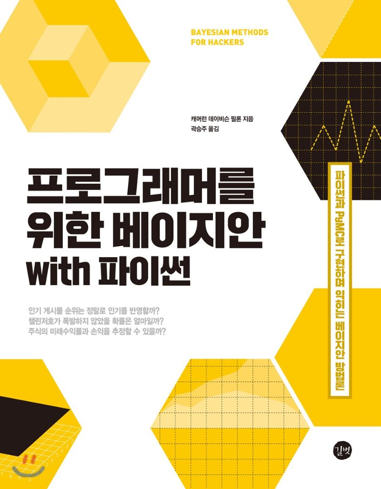

# 데이터 과학을 위한 통계

제목에 끌려서 샀다. 예제 코드가 R로 작성되어 있어서 책을 읽으면서, 괜찮으면 파이썬 코드로 바꿔보는 것도 좋을 것 같다.
이 책의 소스코드는 책 공식 깃헙 페이지와 한글판 저장소에서 확인할 수 있다.
# 목차 및 요약
1장 베이지안 추론의 철학 __1.1 서론 ____1.1.1 베이지안 심리 상태 ____1.1.2 실제 베이지안 추론 ____1.1.3 빈도주의자의 방법이 틀렸나? ____1.1.4 빅데이터에 대한 논의 __1.2 베이지안 프레임워크 ____1.2.1 예제: 피해갈 수 없는 동전 던지기 ____1.2.2 예제: 사서일까, 농부일까? __1.3 확률분포 ____1.3.1 이산적인 경우 ____1.3.2 연속적인 경우 ____1.3.3 그럼 λ란 무엇인가? __1.4 컴퓨터를 사용하여 베이지안 추론하기 ____1.4.1 예제: 문자 메시지 데이터에서 행동 추론하기 ____1.4.2 우리의 첫 번째 망치를 소개한다: PyMC ____1.4.3 해석 ____1.4.4 사후확률분포에서 얻은 표본에는 어떤 좋은 점이 있는가? __1.5 결론 __1.6 부록 ____1.6.1 두 λ가 정말 다른지 통계적으로 알 수 있나? ____1.6.2 변환점 두 개로 확장하기 __1.7 연습문제 ____1.7.1 해답 __1.8 참고자료
2장 PyMC 더 알아보기 __2.1 서론 ____2.1.1 부모와 자식 관계 ____2.1.2 PyMC 변수 ____2.1.3 모델에 관측 포함하기 ____2.1.4 마지막으로 __2.2 모델링 방법 ____2.2.1 같은 스토리, 다른 결말 ____2.2.2 예제: 베이지안 A/B 테스트 ____2.2.3 간단한 예제 ____2.2.4 A와 B를 묶어 보기 ____2.2.5 예제: 거짓말에 대한 알고리즘 ____2.2.6 이항분포 ____2.2.7 예제: 학생들의 부정행위 ____2.2.8 PyMC 대안 모델 ____2.2.9 더 많은 PyMC 기법들 ____2.2.10 예제: 우주 왕복선 챌린저호 참사 ____2.2.11 정규분포 ____2.2.12 챌린저호 참사 당일에는 무슨 일이 일어났는가? __2.3 우리의 모델이 적절한가? ____2.3.1 분리도표 __2.4 결론 __2.5 부록 __2.6 연습문제 ____2.6.1 해답 __2.7 참고자료
3장 MCMC 블랙박스 열기 __3.1 베이지안 지형 ____3.1.1 MCMC를 사용하여 지형 탐색하기 ____3.1.2 MCMC 수행 알고리즘 ____3.1.3 사후확률분포에 대한 다른 접근법 ____3.1.4 예제: 혼합모델을 사용한 비지도 클러스터링 ____3.1.5 사후확률분포의 표본을 섞지 마라 ____3.1.6 MAP을 사용하여 수렴 개선하기 __3.2 수렴 판정하기 ____3.2.1 자기상관 ____3.2.2 솎아내기 ____3.2.3 pymc.Matplot.plot() __3.3 MCMC에 대한 유용한 팁 ____3.3.1 지능적인 시작값 ____3.3.2 사전분포 ____3.3.3 통계적 계산에 대한 구전 정리 __3.4 결론 __3.5 참고자료
4장 아무도 알려주지 않는 위대한 이론 __4.1 서론 __4.2 큰 수의 법칙 ____4.2.1 직관 ____4.2.2 예제: 푸아송 확률변수의 수렴 ____4.2.3 Var(Z)를 어떻게 계산할까? ____4.2.4 기댓값과 확률 ____4.2.5 이 모든 것이 베이지안 통계와 무슨 상관이 있을까? __4.3 작은 수의 혼란 ____4.3.1 예제: 통합된 지리 데이터 ____4.3.2 예제: 캐글의 미국 인구조사 우편물 회신율 챌린지 ____4.3.3 예제: 레딧 코멘트 정렬하기/추려내기 ____4.3.4 추리기 ____4.3.5 그러나 이 방법은 실시간에서는 너무 느리다 ____4.3.6 별등급 시스템 확장 __4.4 결론 __4.5 부록 ____4.5.1 코멘트를 추리는 수식 유도 __4.6 연습문제 ____4.6.1 해답 __4.7 참고자료
5장 오히려 큰 손해를 보시겠습니까? __5.1 서론 __5.2 손실함수 ____5.2.1 현실 세계에서의 손실함수 ____5.2.2 예제: ‘The Price Is Right’ 쇼케이스 최적화 __5.3 베이지안 방법을 통한 기계학습 ____5.3.1 예제: 금융예측 ____5.3.2 예제: 캐글의 Observing Dark Worlds 콘테스트 ____5.3.3 데이터 ____5.3.4 사전확률 ____5.3.5 훈련과 PyMC 구현 __5.4 결론 __5.5 참고자료
6장 우선순위 바로잡기 __6.1 서론 __6.2 주관적인 사전확률분포 vs. 객관적인 사전확률분포 ____6.2.1 객관적인 사전확률분포 ____6.2.2 주관적인 사전확률분포 ____6.2.3 결정, 결정… ____6.2.4 경험적 베이즈 __6.3 알아두면 유용한 사전확률분포 ____6.3.1 감마분포 ____6.3.2 위샤트분포 ____6.3.3 베타분포 __6.4 예제: 베이지안 MAB(Multi-Armed Bandits) ____6.4.1 응용 ____6.4.2 솔루션 제안 ____6.4.3 적합의 척도 ____6.4.4 알고리즘 확장하기 __6.5 해당 분야 전문가로부터 사전확률분포 유도하기 ____6.5.1 트라이얼 룰렛법 ____6.5.2 예제: 주식수익률 ____6.5.3 위샤트분포를 위한 팁 __6.6 켤레 사전확률분포 __6.7 제프리 사전확률분포 __6.8 N이 증가할 때 사전확률분포의 효과 __6.9 결론 __6.10 부록 ____6.10.1 벌점화 회귀부모형에 대한 베이지안의 관점 ____6.10.2 퇴화 사전확률분포 고르기 __6.11 참고자료
7장 베이지안 A/B 테스트 __7.1 서론 __7.2 전환율 테스트 개요 __7.3 선형손실함수 추가하기 ____7.3.1 기대수익분석 ____7.3.2 A/B 실험 확장하기 __7.4 전환율을 넘어서: t-검정 ____7.4.1 t-검정 설정 __7.5 증분 추정하기 ____7.5.1 점추정량 만들기 __7.6 결론 __7.7 참고자료
부록 A __A.1 파이썬, PyMC ____A.1.1 아나콘다 설치하기 ____A.1.2 실습 전 라이브러리 설치하기 __A.2 주피터 노트북 ____A.2.1 예제 소스 다운로드 ____A.2.2 주피터 노트북 실행 __A.3 Reddit 실습하기 ____A.3.1 praw 설치하기 ____A.3.2 Reddit 가입하기